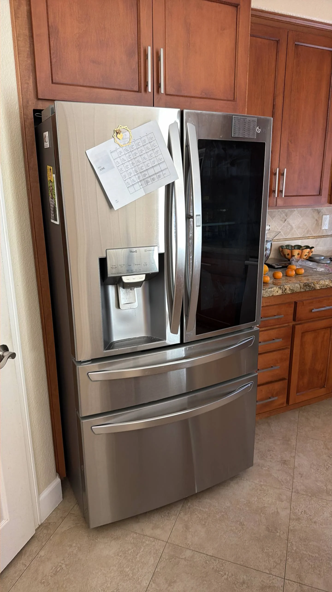

LG Refrigerator Is Not Cooling — Possible Compressor, Evaporator Fan, or Thermistor Problems
When an LG refrigerator is not cooling properly, it is often a sign that one or more key components in the cooling system are no longer functioning as they should. You may first notice that food is no longer staying fresh, drinks are not as cold as usual, or the temperature inside both compartments continues to rise despite the refrigerator running. While the cause can range from a simple airflow issue to a major mechanical failure, compressor problems, evaporator fan malfunctions, and faulty thermistors are among the most common reasons an LG refrigerator loses its cooling performance.
LG refrigerators rely on a sealed refrigeration system that continuously removes heat from the interior of the appliance. The compressor circulates refrigerant through the evaporator and condenser, the evaporator fan distributes cold air throughout the refrigerator, and temperature sensors provide real-time information to the electronic control board. If any of these components stops operating correctly, the refrigerator may struggle to maintain safe food storage temperatures or stop cooling altogether.
A failing compressor is one of the most serious causes of cooling failure. As the heart of the refrigeration system, the compressor is responsible for pressurizing and circulating refrigerant. If it becomes electrically defective, suffers internal mechanical wear, or can no longer generate adequate pressure, the refrigeration cycle is interrupted. In some situations, the compressor may attempt to start repeatedly without remaining running, while in others it may operate continuously but fail to produce enough cooling.

Problems with the compressor start relay can produce similar symptoms. The relay provides the extra electrical boost needed each time the compressor starts. If this component fails, the compressor may click repeatedly, emit a loud buzzing sound, or fail to start altogether. Although the compressor itself may still be functional, a defective relay can prevent the entire cooling system from operating.
The evaporator fan motor is another component that plays a critical role in maintaining consistent temperatures. Once the evaporator produces cold air, the fan circulates it throughout both the freezer and fresh food compartments. If the motor burns out, the blades become obstructed by ice, or the control board fails to power the fan, cold air cannot move efficiently through the appliance. Depending on the model, the freezer may remain partially cold for some time while the refrigerator compartment gradually becomes warm.
A faulty thermistor can also interfere with normal cooling. LG refrigerators use multiple thermistors to monitor temperatures in different areas of the appliance. These sensors send resistance readings to the electronic control board, allowing it to determine when to operate the compressor and fans. If a thermistor begins sending incorrect information or fails completely, the control board may receive inaccurate temperature readings and respond improperly. The refrigerator may run continuously, shut off too early, or fail to maintain stable temperatures.
In some cases, excessive frost buildup on the evaporator can restrict airflow and reduce cooling performance. If the automatic defrost system fails because of a defective heater, thermostat, or control board, ice gradually covers the evaporator coils. As airflow becomes blocked, the evaporator fan can no longer distribute cold air effectively, causing temperatures inside the refrigerator to rise even though the compressor continues running.
Dirty condenser coils should also be considered when diagnosing cooling problems. Dust, pet hair, and other debris accumulate on the coils over time, making it more difficult for the refrigerator to release heat. As a result, the compressor works harder and longer to achieve the desired temperature, reducing efficiency and increasing wear on the cooling system. Routine coil cleaning can help maintain consistent performance and lower energy consumption.
The electronic control board may also contribute to cooling issues. This board manages compressor operation, fan speeds, defrost cycles, and temperature regulation. If an internal circuit fails or communication with sensors is interrupted, cooling performance may become inconsistent. Some refrigerators may display diagnostic error codes, while others simply stop cooling without any visible warning.
Many homeowners try resetting the refrigerator by disconnecting it from power for several minutes. A power reset may clear a temporary electronic fault caused by a voltage fluctuation, but it will not repair failed mechanical or electrical components. If cooling does not return after the refrigerator restarts or the problem quickly reappears, a more thorough inspection is necessary.
Several warning signs often accompany cooling failure. These include warm food compartments, a freezer that no longer reaches freezing temperatures, unusually long compressor run times, weak airflow from interior vents, unusual buzzing or clicking noises, excessive frost behind the freezer panel, water leaks caused by melting ice, or error codes displayed on the control panel. Identifying these symptoms early can help prevent food spoilage and reduce the likelihood of additional component damage.
Accurately diagnosing cooling problems requires testing multiple systems rather than replacing parts based on symptoms alone. Professional technicians inspect compressor performance, measure refrigerant pressures when necessary, test the evaporator fan motor, verify thermistor resistance, evaluate the defrost system, and inspect the electronic control board using specialized diagnostic equipment. Since several different failures can produce nearly identical symptoms, proper testing is essential before repairs begin.
To help extend the life of your refrigerator, keep the condenser coils clean, avoid blocking interior air vents with large food containers, check that the door gaskets seal properly, allow adequate ventilation around the appliance, and schedule service whenever cooling performance begins to decline. Preventive maintenance reduces unnecessary strain on the refrigeration system and helps the appliance operate more efficiently.
If your LG refrigerator is not cooling, prompt diagnosis is the best way to prevent more extensive damage. A failing compressor, defective evaporator fan, faulty thermistor, or another cooling system component can quickly affect food safety and increase repair costs if left unresolved. Professional service can identify the exact source of the problem, restore proper cooling performance, and keep your LG refrigerator operating reliably for years to come.